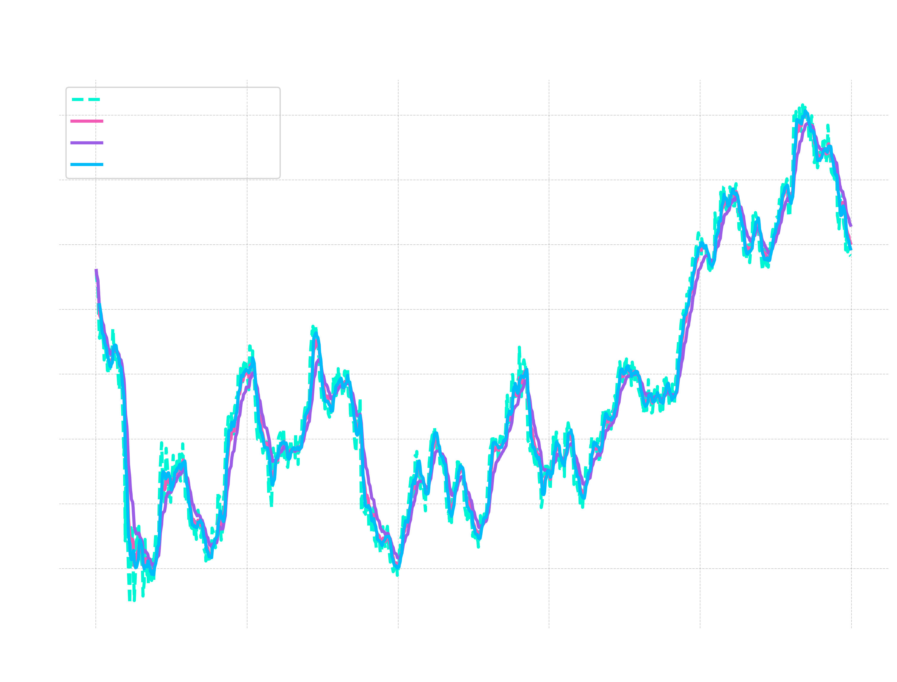
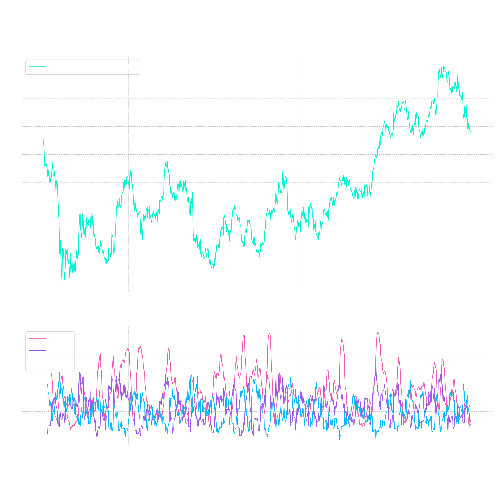
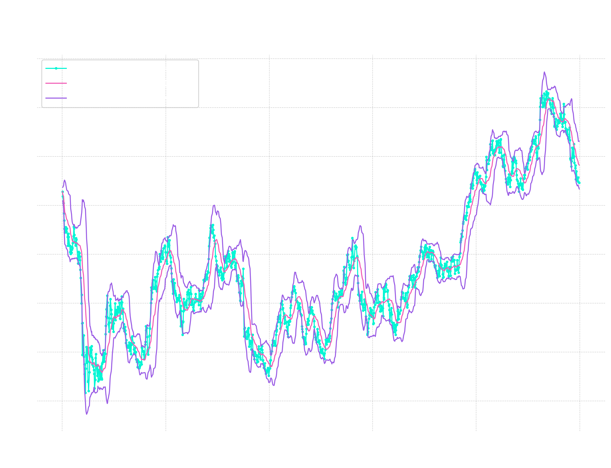

Objetivo
O objetivo deste projeto foi desenvolver um modelo capaz de prever o fechamento diário da ITUB4.SA, utilizando não apenas preços brutos, mas o comportamento estatístico do ativo através de indicadores técnicos de momentum e volatilidade.
Análise Técnica e Indicadores
Abaixo, a visualização dos indicadores que serviram como base para as variáveis preditoras (features) do modelo.
Indicadores Técnicos
Médias Móveis
As médias móveis são um filtro de tendência que suavizam as flutuações de preço ao longo do tempo. Podem ser Médias Simples ou Médias Móveis Exponenciais.

ADX: Average Directional Index
Indicador que mede a força de uma tendência. Ele mostra se há uma tendência clara ou se o ativo está lateralizado.

Bandas de Bollinger
É um indicador de volatilidade que mede o quanto um ativo se move em relação a sua média simples, formando um gráfico de bandas em que os limites são a média mais dois desvios e a média menos dois desvios.
Quando as bandas se abrem, maior o movimento do ativo.

Modelo de Regressão Linear
As features do modelo de Regressão Linear foram baseadas nos indicadores técnicos apresentados, adaptando-os para um treinamento mais efetivo do modelo.

| Feature | Impacto | Justificativa Técnica |
|---|---|---|
| Distance_SMA_20 | Alto | Mede o esticamento do preço em relação à média. |
| EMA_9 / EMA_21 | Moderado | Captura a aceleração da tendência de curto prazo. |
| Bollinger thikness | Baixo | Avalia o quanto um ativo está variando. |
| ADX | Filtro | Isola momentos de ruído lateral do mercado. |
Conclusão & Próximos Passos
Modelagem
As variáveis de média tem maior impacto na regressão linear. O modelo possui um R² de 0.89 e um MAE de R$ 0,69.
Comportamento
O modelo tende a ser conservador, prevendo quedas mais suaves e altas mais lentas. Provável influência das médias.
Automação
Próxima etapa: Implementação uma automação que notifique clientes via Telegram quando o modelo prever momentos de alta.